个人博客搭建经验记录
🎲搭建
🎮注册GitHub
博主用的是hexo框架+butterfly主题然后放到githubpage上，所以你首先得要注册一个github账号
参考: GitHub账号注册教程
🎮安装Node.js
🎮安装Git
参考：Git 详细安装教程
🎮关联GitHub
关联GitHub你才能把文件上传到GitHub上面，所以首先得关联GitHub，现在基本上都是用SSH登录的，想了解SSH是什么可以看这篇文章 详述SSH的原理及其应用。下面讲下具体该怎么做
新建一个文件夹（博主建的叫Blog，这个文件夹用来后面存放你自己的博客，所以我不建议随便放），然后在里面右键Git Bash.
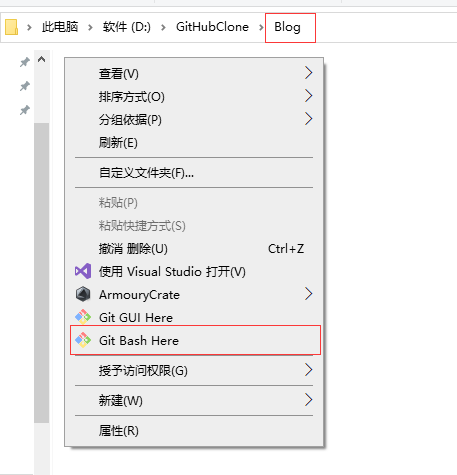
输入 ssh-keygen -t rsa 命令然后按3下回车
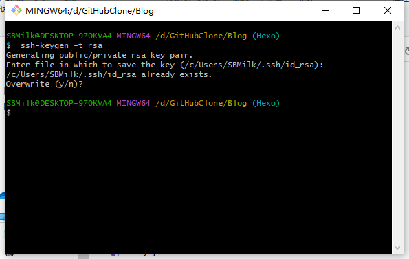
输入 cd ~/.ssh 将目录改到ssh的目录（注意红框位置变成这样才说明改盘成功），然后输入ls可以看到目录下有三个文件，其中我们需要把 id_rsa.pub 的内容添加到你的GitHub里面。
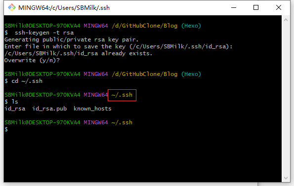
再输入 cat id_rsa.pub 就可以查看 id_rsa.pub 里的内容。
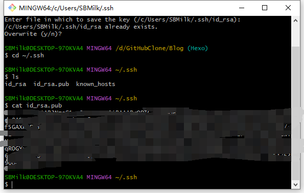
选中然后右键 Copy （这里面CtrlC Ctrlv没用）然后进入你自己的GitHub主页点击右上角，再点击Settings
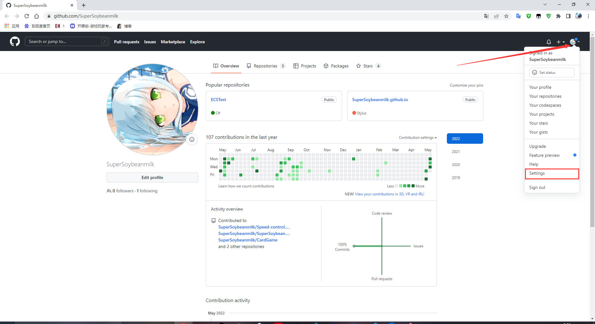
找到SSH and GPG Keys 点右上角的 NewSSH Key
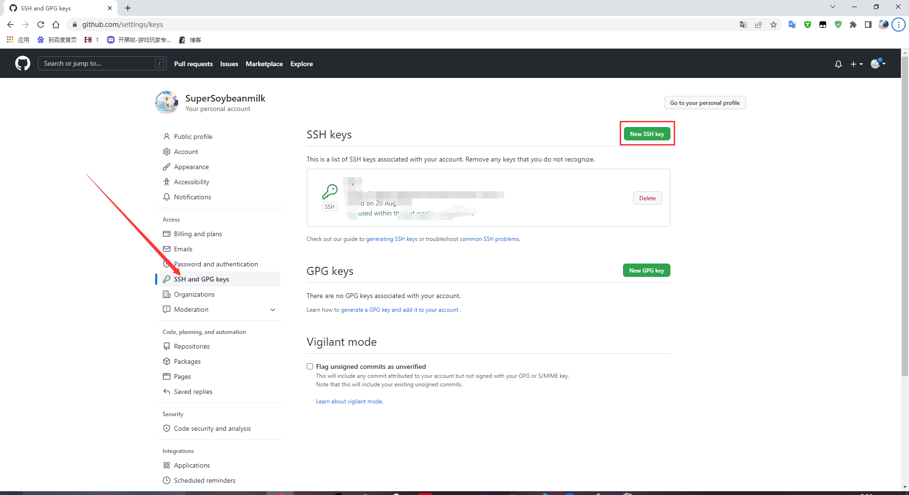
将你刚刚复制的 id_rsa.pub 里的内容粘贴到红框内的位置，点Add SSH key
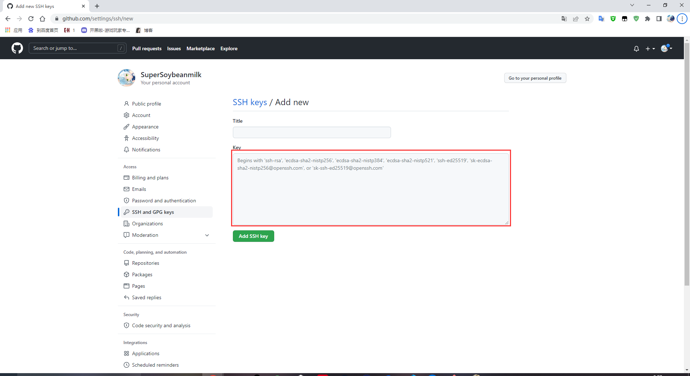
以上操作完成以后回到Git Bash输入 ssh -T git@github.com 来验证是否成功，如果出现下图所示就说明成功了。
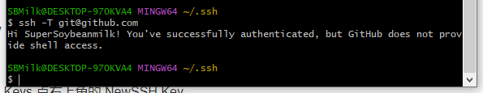
🎮新建博客仓库
打开你的github主页然后点开Repositories，然后点New新建一个仓库
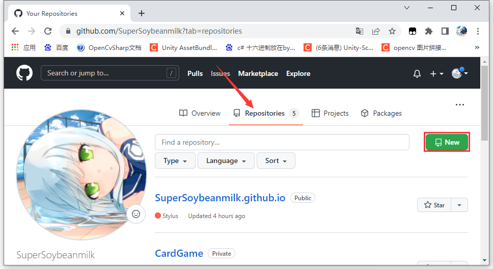
然后名字必须按照以下格式来写 你的GitHub名字+github.io 因为我这边已经创建过了不能重名所以不能创建，红框是对这个仓库的描述，可填可不填，然后点击最后的Create repository.
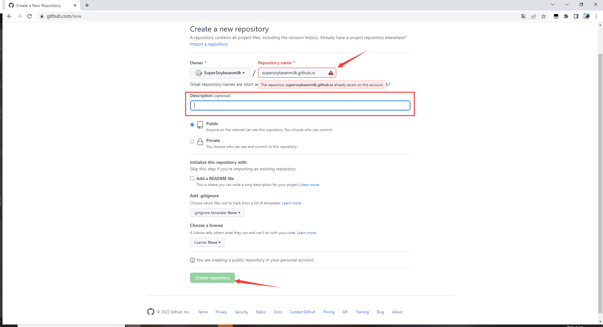
然后点 Settings→Pages 看到差不多这个界面就说名成功了。
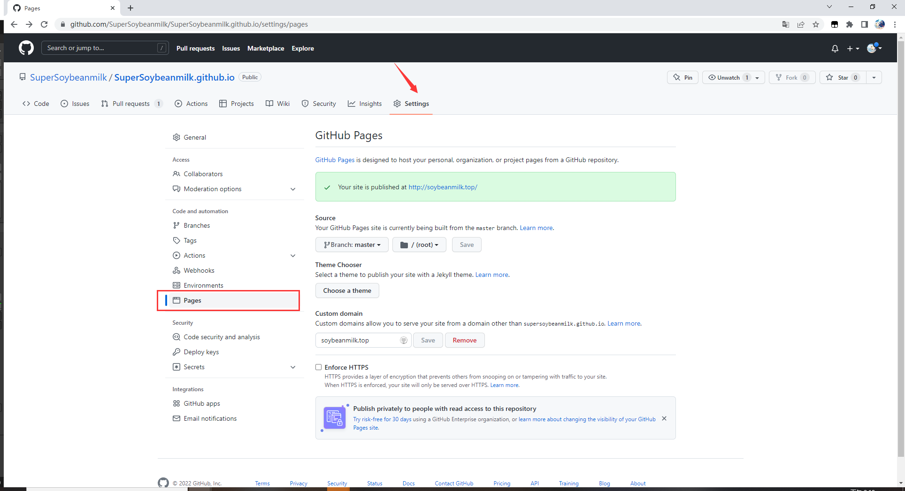
🎮Hexo搭建
在之前新建的文件夹里打开Git Bash，输入 npm install -g hexo-cli 来安装Hexo。出现以下提示就说明安装成功了
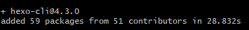
接着输入 hexo init 初始化博客。
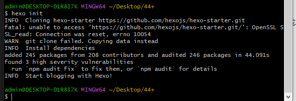
初始化完成以后输入 hexo g 生成静态页面。
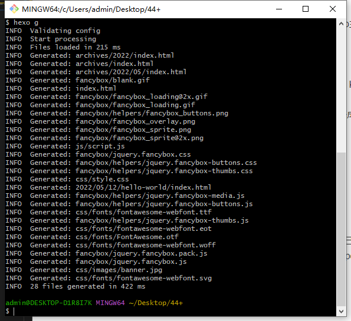
最后输入 hexo s 开启本地访问端口（ctrl + c 关闭server）然后用你浏览器打开 http://localhost:4000/ 打开后如下图就说明成功了。
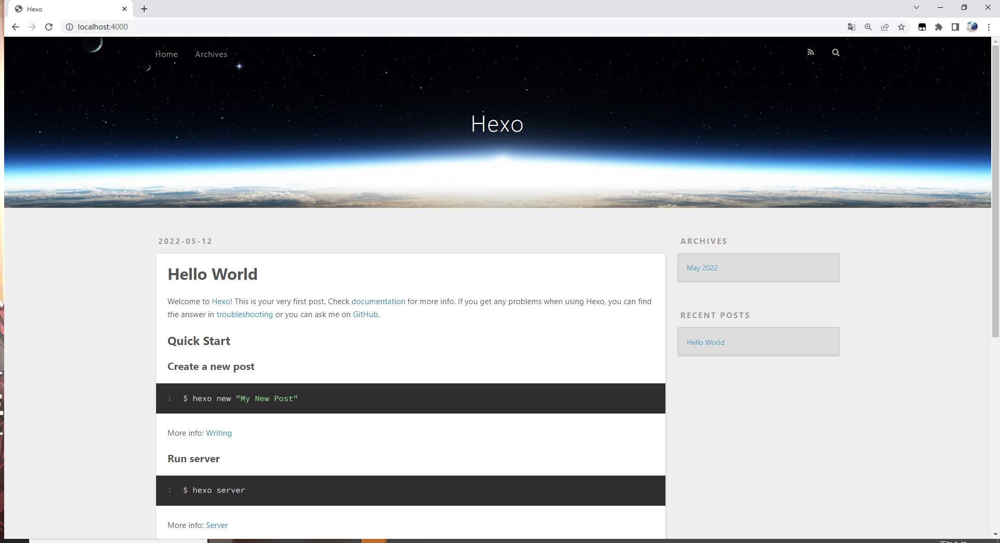
🎮将博客放到GitHub上
回到博客根目录侠（前面几步新建的文件夹里）打开 _config.yml 文件
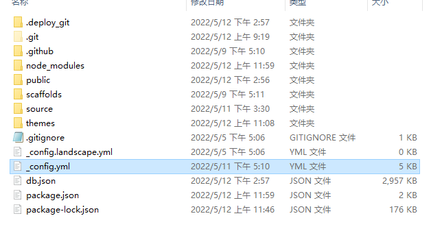
然后在最下面按照下图内容修改保存。（注意冒号后面的空格）
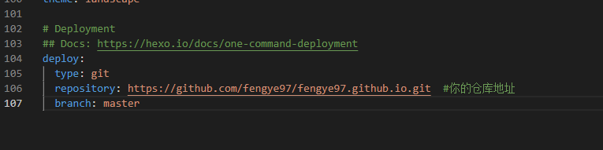
deploy:
type: git
repository: https://github.com/SuperSoybeanmilk/SuperSoybeanmilk.github.io.git
branch: master
其中 repository 这一项填你自己的仓库地址。
你仓库地址在这个地方获取。
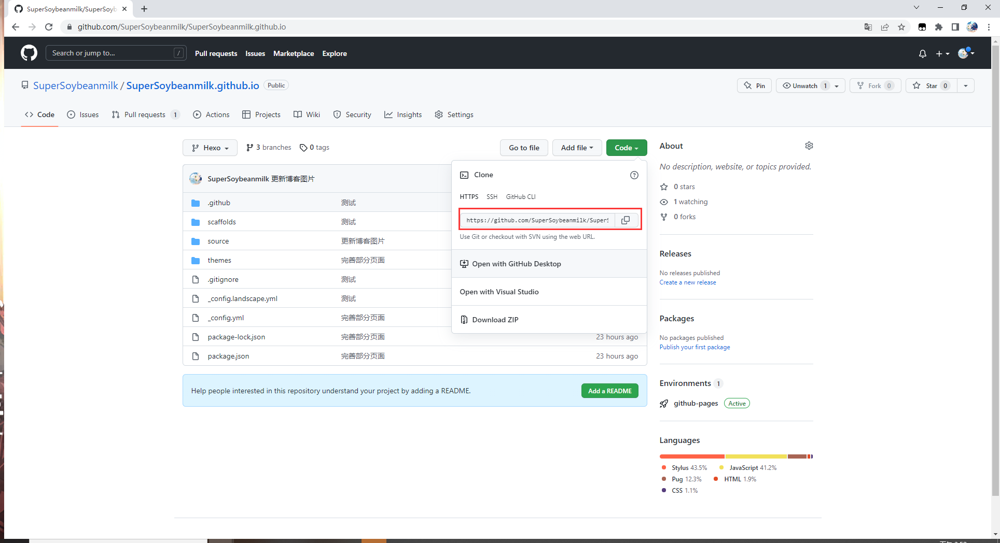
然后在根目录打开你的Git Bash输入命令。
npm install hexo-deployer-git –save
安装完成以后按顺序输入以下三个命令，以后对博客进行修改以后想要更新到远端就输入这三条。
hexo clean #清除缓存文件 db.json 和已生成的静态文件
hexo generate #生成网站静态文件到默认设置的 public 文件夹（可以写成hexo g）
hexo deploy #自动生成网站静态文件，将文件提交到你设定好的仓库里面（可以写成hexo d）
如果你hexo d 时出现类似以下这种问题，我的建议是多提交几次就行了。
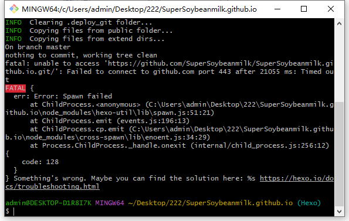
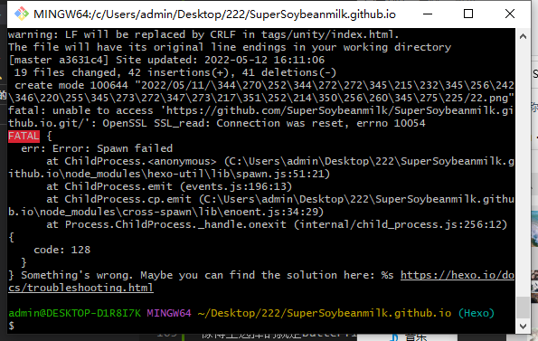
当你hexo d后出现以下画面就说明成功了
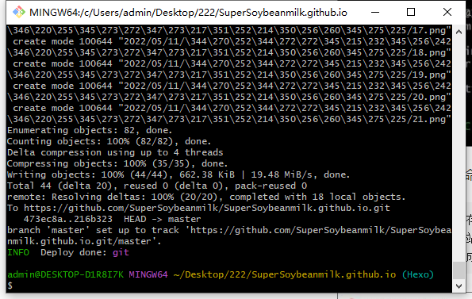
这时候你就可以打开 https://自己的GitHub名字.github.io 就行了
🎮选择自己喜欢的主题
可以在官网 这个地方 找到自己喜欢的主题然后安装
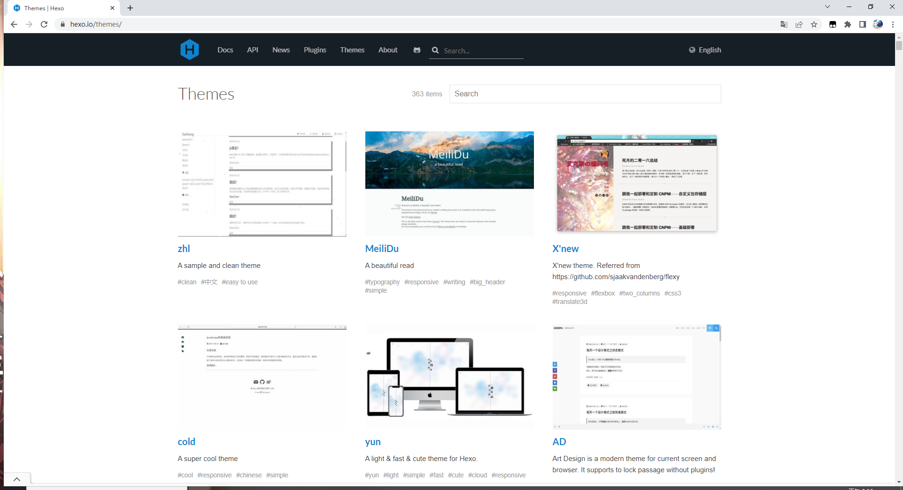
像博主选择的就是Butterfly。可以参考Butterfly官方文档
想安装主题请务必把官方中文文档目录的每一项都看仔细，然后根据个人需求去配置，基本上都能弄好，这个官方文档还是比较重要的，博主修改博客的时候基本上对着文档看了好久。
🎲Butterfly主题美化
因为博主自己用的是Butterfly主题，所以这里只列出用butterfly主题的美化过程，也可以看成是博主自己美化过程的一个记录。
🎮引入自定义CSS
如果你自己会写CSS的话，他这个也是能自己引入CSS来达到高度自定义的，虽然改pug也能对博客进行修改，但是这种方法貌似会影响更新，所以我个人而言还是比较喜欢和推荐改CSS的。
首先到你博客根目录下找到 themes\butterfly\source\css 这个文件夹。然后在里面新建文件夹custom，在里面新建beauty.styl文件。
再到主题的_config.yml文件的inject项中添加以下代码：
1 | inject: |
然后你就可以在你的beauty.styl文件里去修改样式了。
🎮左下角live2D
这个插件更是重量级，可以大大加强你博客的二次元浓度。首先去GitHub把项目下载下来
然后把他放在 主题目录 的/source文件夹下然后把解压的文件夹名字改成 live2d-widget,然后在里面找到autoload.js这个文件，随后做出以下修改：
1 | //const live2d_path = "https://cdn.jsdelivr.net/gh/stevenjoezhang/live2d-widget/"; 这一行注销掉 |
再到主题的_config.yml文件的inject项中添加以下代码：
1 | inject: |
并且在这个文件最后添加以下代码：
1 | live2d: |
然后三连等一分钟就能看到效果了，你也可以先hexo clean，hexo g，hexo s，这三个指令按顺序打出，接着去 http://localhost:4000/ 查看效果后hexo d保存到github上。
🎮左下角音乐播放器
先安装 hexo-tag-aplayer 打开Git Bash输入命令：
npm install –save hexo-tag-aplayer
然后再Hexo的_config.yml文件里添加以下代码：
1 | aplayer: |